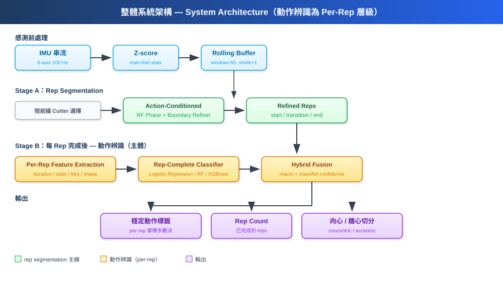
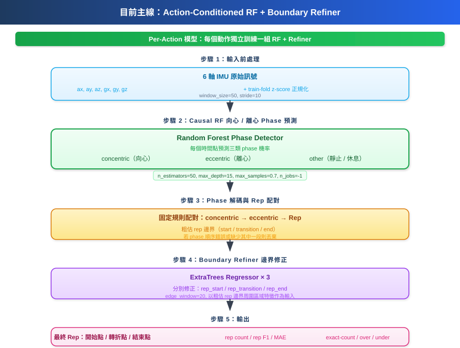

報告與論文材料樣板
圖 1：整體系統架構圖

主流程：IMU 串流 → 短前綴選擇 rep cutter → action-conditioned rep segmentation → 每完成一個 rep 後進行 rep-complete action classification → rep count / phase split。動作辨識是 per-rep 層級，非 prefix 層級。疲勞預測標註為未來延伸（IMU + PPG）。
圖 2：目前主線 rep-cutting 架構圖

詳細 pipeline：6-axis IMU → z-score 正規化 → causal RF phase detector → phase 解碼與 rep 配對 → boundary refiner（ExtraTrees × 3）→ 最終 refined reps。
表 1：主模型與常見 baseline 比較
| 模型 |
是否 causal |
是否可部署 |
Precision |
Recall |
Rep F1 |
micro_f1@50 |
備註 |
| 目前主線：RF + boundary refiner |
是 |
尚未完成 Luckfox runtime |
0.8648 |
0.8869 |
0.8757 |
0.8126 |
guarded held-out yoru |
| BiLSTM |
否 |
不適合即時串流 |
待補 |
待補 |
待補 |
待補 |
請用 held-out 結果替換 |
| phase-only causal TCN |
是 |
理論上可 |
待補 |
待補 |
待補 |
待補 |
請用 held-out 結果替換 |
| DS-MS-TCN |
是 |
板端路徑未完成 |
待補 |
待補 |
待補 |
待補 |
可放作對照 |
表 2：Modality / guardrail 消融
| 設定 |
模態範圍 |
Selection 指標 |
是否 count-aware |
Rep F1 |
Recall |
exact-count |
備註 |
| free search |
待補 |
待補 |
否 |
待補 |
待補 |
待補 |
請補舊版 nested 結果 |
| modality-only |
雙模態 + 全模態 |
rep_f1 |
部分 |
待補 |
待補 |
待補 |
請補 smoke 或 held-out 結果 |
| count-aware guarded |
雙模態 + 全模態 |
rep_f1 + count consistency |
是 |
0.8757 |
0.8869 |
19 / 25 |
modality_count_guardrail_yoru_v1 |
表 3：Phase-first 與 Direct-rep quick probe 比較
| 方法 |
Held-out subject |
動作 |
Precision |
Recall |
Rep F1 |
exact-count |
結論 |
| phase-first RF |
yoru |
db_triceps_curl |
1.0000 |
1.0000 |
1.0000 |
3 / 3 |
目前主線較穩 |
| direct event RF（relaxed probe） |
yoru |
db_triceps_curl |
0.9474 |
0.5143 |
0.6667 |
0 / 3 |
under-segmentation 明顯 |
表 4：Rep-Complete Action Classifier 比較（held-out yoru・2468 train reps・274 test reps）
| 模型 |
輸入型態 |
Accuracy |
Macro F1 |
備註 |
| 1D CNN | raw signal | 0.7810 | 0.7572 | 最佳模型・簡單高效 |
| TCN | raw signal | 0.7591 | 0.7290 | CNN 家族但更深的 temporal context |
| SVM (RBF) | rich features | 0.7555 | 0.7354 | 經典 baseline・特徵工程後很強 |
| k-NN (k=5) | rich features | 0.7518 | 0.7283 | 簡單但意外有效 |
| CatBoost | rich features | 0.7336 | 0.7068 | boosting 家族最佳 |
| Logistic Regression | rich features | 0.7226 | 0.6792 | 線性 baseline |
| XGBoost | rich features | 0.7117 | 0.6784 | - |
| Random Forest | rich features | 0.6861 | 0.6523 | 400 trees・需要更細調 |
| BiLSTM | raw signal | 0.6569 | 0.6328 | 短序列下雙向優勢不明顯 |
所有模型共用相同的 163 維 rich features 或 resampled raw signal。LightGBM 因 pandas 相容性問題跳過。Feature-based models 使用 _compute_rich_features（stats + RMS + IQR + ZCR + autocorrelation + FFT + inter-axis correlation）。
表 5：前綴長度 vs Cutter Switch 準確率
目的為確保 cutter 選擇正確，非主動作辨識。
| 前綴長度 |
Top-1 Accuracy |
Top-2 Accuracy |
備註 |
| 0.5 s | 待補 | 待補 | 待補 |
| 1.0 s | 待補 | 待補 | 待補 |
| 2.0 s | 待補 | 待補 | 待補 |
| 3.0 s | 待補 | 待補 | 待補 |
圖 3：1D CNN Rep-Complete Classifier Confusion Matrix（yoru held-out）
待替換：將 artifacts/baseline_comparison/rep_complete_classifier_yoru_v2/results.json 裡 1D CNN 的 confusion matrix 視覺化
總體 accuracy 0.7810・macro F1 0.7572。8 個動作中大部分有 70%+ recall。
圖 4：End-to-End 系統展示
待替換：同一條 stream 的 rep segmentation 結果、每 rep 的 action classifier 輸出、rep count、多個時間軸疊圖
表 6：部署可行性摘要
| 項目 |
目前主線 RF + refiner |
DS-MS-TCN / Student 路徑 |
目前判讀 |
| 準度 |
yoru held-out: Rep F1 0.8757 |
待補最適對照 |
RF 主線較強 |
| 模型大小 |
待補 deploy artifact |
已有 ONNX / student 路徑 |
RF 缺 deploy artifact |
| 記憶體 |
待補 Luckfox 實測 |
已有部分可行性分析 |
RF 未驗證 |
| 延遲 |
待補 Luckfox 實測 |
已有舊路徑 streaming 參考 |
RF 未驗證 |
| 是否可直接上 Luckfox |
否 |
部分路徑較接近 |
RF 目前為 offline reference |